Klasifikasi Kesuburan Tanah Menggunakan K-Nearest Neighbors (KNN)#
Notebook ini membahas proses klasifikasi dataset kesuburan tanah menggunakan algoritma K-Nearest Neighbors (KNN).
Tahapan yang dilakukan meliputi:
Memahami dataset
Preprocessing data
Pembangunan model KNN
Evaluasi model menggunakan Accuracy, Precision, Recall, dan F1-Score
Analisis hasil dan visualisasi data
Tujuan#
Tujuan dari analisis ini adalah:
Melakukan preprocessing pada dataset kesuburan tanah
Membangun model klasifikasi menggunakan algoritma KNN
Mengukur performa model menggunakan metrik evaluasi
Menjelaskan alasan hasil klasifikasi yang diperoleh
import pandas as pd
import numpy as np
import matplotlib.pyplot as plt
from sklearn.impute import SimpleImputer
from sklearn.preprocessing import StandardScaler, MinMaxScaler
from sklearn.model_selection import cross_val_score, StratifiedKFold
from sklearn.neighbors import KNeighborsClassifier
from sklearn.decomposition import PCA
from sklearn.metrics import accuracy_score, precision_score, recall_score, f1_score
df = pd.read_csv('tugas_iris/data/dataset_kesuburan_tanah_missing.csv')
df.head()
| ID | pH Tanah | N Total (%) | P Tersedia (ppm) | K Tersedia (meq/100g) | C Organik (%) | KTK (meq/100g) | Kejenuhan Basa (%) | Tekstur Tanah | Kadar Air (%) | Bulk Density (g/cm³) | Label | |
|---|---|---|---|---|---|---|---|---|---|---|---|---|
| 0 | 1 | 8.93 | 0.183 | 5.35 | 0.124 | 0.68 | 6.18 | 31.86 | Debu | 60.49 | 1.767 | Tidak Subur |
| 1 | 2 | 6.24 | 0.420 | 54.32 | 0.554 | 4.87 | 33.46 | 82.77 | Lempung Berpasir | 35.97 | 0.960 | Subur |
| 2 | 3 | 4.82 | NaN | 13.44 | 0.257 | NaN | 14.79 | 55.45 | Debu | 11.48 | 1.851 | Tidak Subur |
| 3 | 4 | 7.34 | 0.269 | 17.46 | 0.542 | 2.49 | 35.57 | 62.09 | Lempung Berliat | 37.54 | 1.017 | Subur |
| 4 | 5 | 3.77 | 0.144 | 1.15 | 0.106 | 0.62 | 18.97 | 10.85 | Liat | 6.97 | 1.766 | Tidak Subur |
print("Ukuran dataset:", df.shape)
print("\nNama kolom:")
print(df.columns.tolist())
print("\nInfo dataset:")
print(df.info())
print("\nJumlah missing value per kolom:")
print(df.isna().sum())
Ukuran dataset: (2000, 12)
Nama kolom:
['ID', 'pH Tanah', 'N Total (%)', 'P Tersedia (ppm)', 'K Tersedia (meq/100g)', 'C Organik (%)', 'KTK (meq/100g)', 'Kejenuhan Basa (%)', 'Tekstur Tanah', 'Kadar Air (%)', 'Bulk Density (g/cm³)', 'Label']
Info dataset:
<class 'pandas.DataFrame'>
RangeIndex: 2000 entries, 0 to 1999
Data columns (total 12 columns):
# Column Non-Null Count Dtype
--- ------ -------------- -----
0 ID 2000 non-null int64
1 pH Tanah 2000 non-null float64
2 N Total (%) 1840 non-null float64
3 P Tersedia (ppm) 1760 non-null float64
4 K Tersedia (meq/100g) 1860 non-null float64
5 C Organik (%) 1800 non-null float64
6 KTK (meq/100g) 2000 non-null float64
7 Kejenuhan Basa (%) 2000 non-null float64
8 Tekstur Tanah 1900 non-null str
9 Kadar Air (%) 1820 non-null float64
10 Bulk Density (g/cm³) 1880 non-null float64
11 Label 2000 non-null str
dtypes: float64(9), int64(1), str(2)
memory usage: 187.6 KB
None
Jumlah missing value per kolom:
ID 0
pH Tanah 0
N Total (%) 160
P Tersedia (ppm) 240
K Tersedia (meq/100g) 140
C Organik (%) 200
KTK (meq/100g) 0
Kejenuhan Basa (%) 0
Tekstur Tanah 100
Kadar Air (%) 180
Bulk Density (g/cm³) 120
Label 0
dtype: int64
Penjelasan Dataset#
Dataset berisi data kesuburan tanah dengan target klasifikasi:
Subur
Tidak Subur
Atribut yang digunakan meliputi:
pH Tanah
N Total (%)
P Tersedia (ppm)
K Tersedia (meq/100g)
C Organik (%)
KTK (meq/100g)
Kejenuhan Basa (%)
Tekstur Tanah
Kadar Air (%)
Bulk Density (g/cm³)
Kolom ID hanya digunakan sebagai identitas data dan tidak dipakai dalam proses klasifikasi. Kolom Label digunakan sebagai target.
Workflow Orange#
Berikut adalah workflow yang digunakan dalam Orange Data Mining:
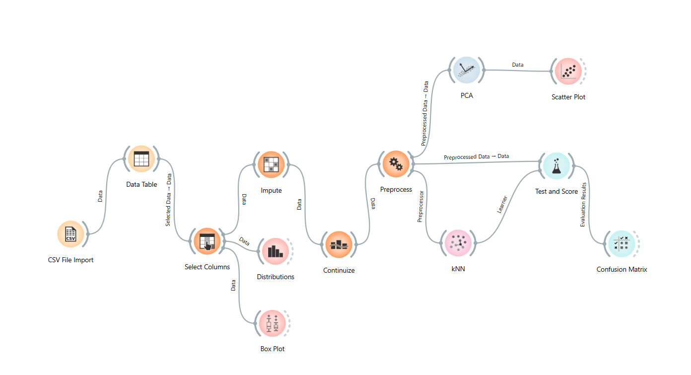
Workflow yang digunakan:
CSV File Import
Data Table
Select Columns
Impute
Continuize
Preprocess
kNN
Test & Score
Confusion Matrix
PCA
Scatter Plot
Distributions
Box Plot
Langkah 1 - Import Data#
Pada tahap awal, dataset dimasukkan ke Orange menggunakan widget CSV File Import.
Widget ini berfungsi untuk membaca file dataset agar dapat diproses pada tahap berikutnya.
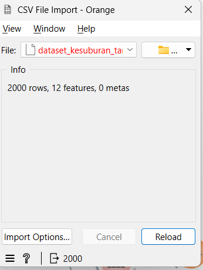
Langkah 2 - Menampilkan Data dengan Data Table#
Setelah data diimpor, data ditampilkan menggunakan widget Data Table untuk memastikan bahwa:
dataset berhasil dibaca
nama kolom sesuai
target tersedia
terdapat missing value
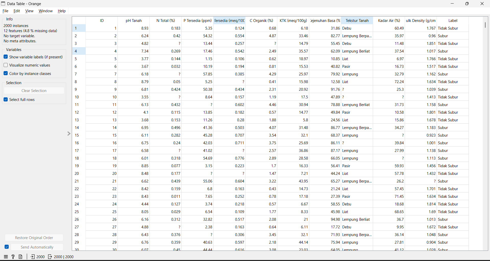
Langkah 3 - Menentukan Features, Target, dan Meta#
Pada widget Select Columns, dilakukan pengaturan:
Features: seluruh atribut tanah
Target: Label
Meta: ID
Alasan tahap ini penting adalah agar model mengetahui kolom mana yang menjadi input dan kolom mana yang menjadi target prediksi.
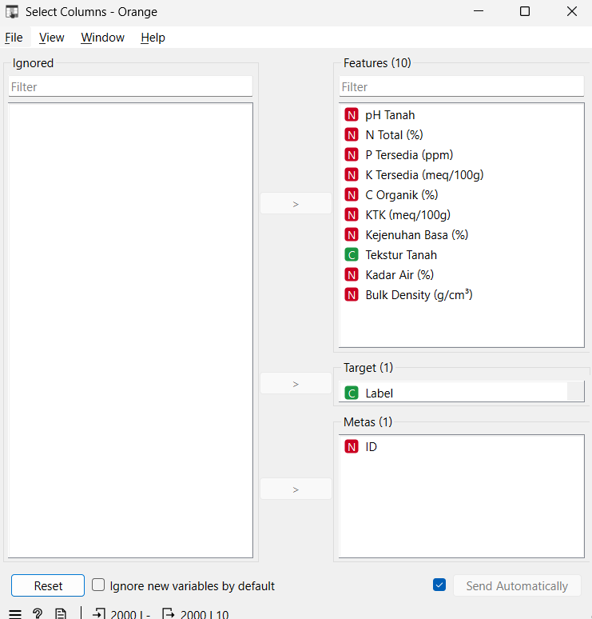
Hasil pengaturan:
Label ditempatkan sebagai target
ID ditempatkan sebagai meta
Atribut lainnya digunakan sebagai fitur
Langkah 4 - Menangani Missing Value dengan Impute#
Dataset memiliki missing value, sehingga perlu dilakukan imputasi.
Pada widget Impute, digunakan metode:
Average untuk atribut numerik
Most frequent untuk atribut kategorikal
Alasan penggunaan metode ini adalah agar seluruh data menjadi lengkap dan dapat digunakan oleh algoritma KNN.
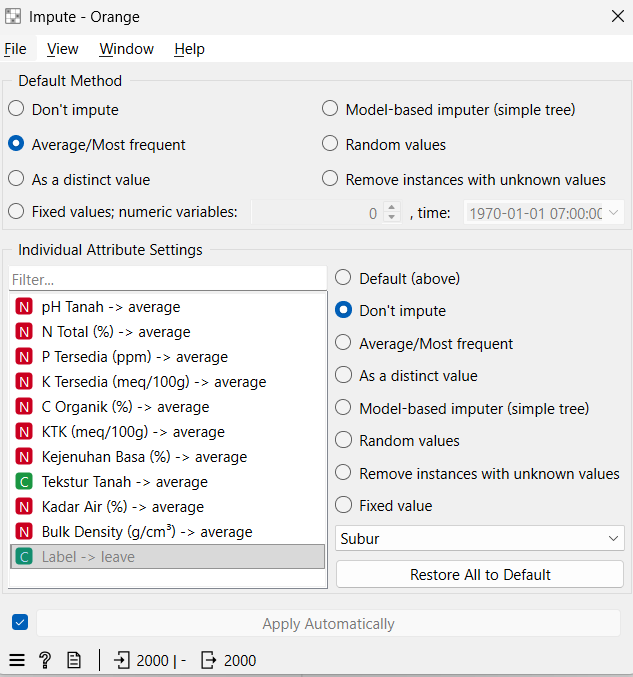
Langkah 5 - Mengubah Data Kategorikal dengan Continuize#
Atribut Tekstur Tanah merupakan atribut kategorikal.
Karena KNN bekerja dengan data numerik, atribut kategorikal perlu diubah ke bentuk numerik menggunakan widget Continuize.
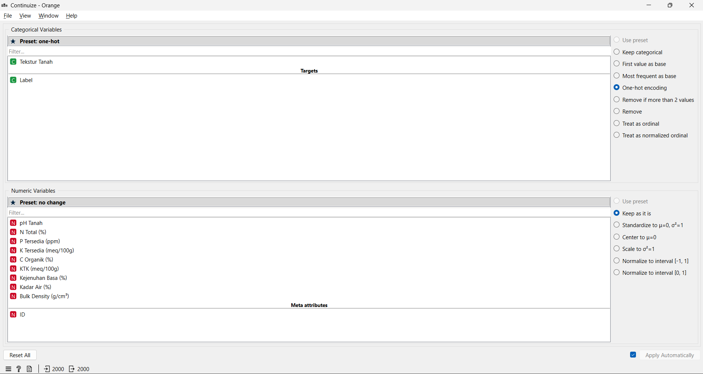
Langkah 6 - Normalisasi Data dengan Preprocess#
Pada widget Preprocess, dilakukan normalisasi fitur.
Tahap ini penting karena algoritma KNN menghitung jarak antar data, sehingga semua fitur perlu berada dalam skala yang sebanding.
Normalisasi membantu mencegah fitur dengan rentang nilai besar menjadi terlalu dominan.
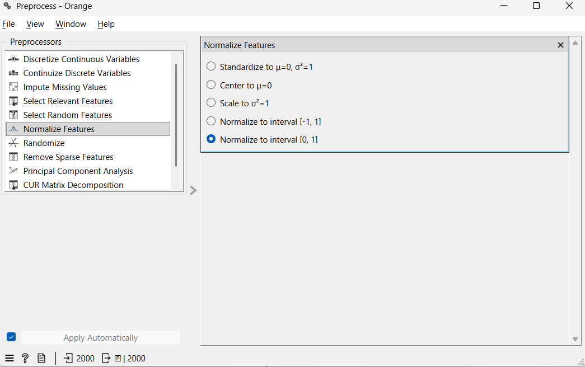
Langkah 7 - Pembuatan Model KNN#
Setelah preprocessing selesai, data digunakan untuk membangun model klasifikasi dengan widget kNN.
KNN bekerja dengan cara:
Menghitung jarak data baru ke seluruh data latih
Mengambil sejumlah tetangga terdekat
Menentukan kelas berdasarkan mayoritas tetangga tersebut
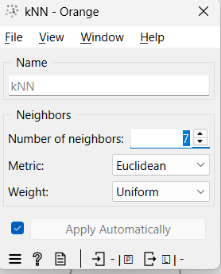
Langkah 8 - Evaluasi Model dengan Test & Score#
Evaluasi model dilakukan menggunakan widget Test & Score dengan metode Cross Validation.
Metode ini digunakan agar evaluasi lebih adil, karena model diuji pada data yang tidak selalu sama dengan data latih.
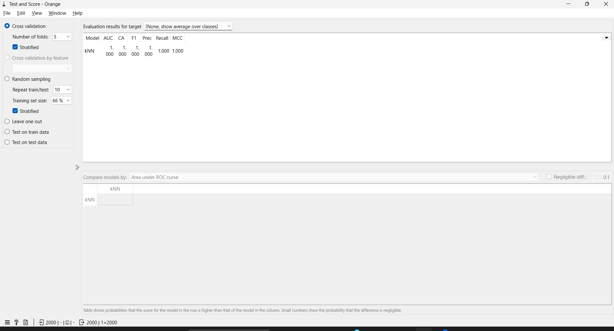
Hasil evaluasi yang diperoleh:
Accuracy = 1.000
Precision = 1.000
Recall = 1.000
F1-Score = 1.000
Langkah 9 - Confusion Matrix#
Widget Confusion Matrix digunakan untuk melihat detail prediksi model.
Dari hasil confusion matrix, seluruh data berhasil diklasifikasikan dengan benar, sehingga tidak terdapat kesalahan prediksi.
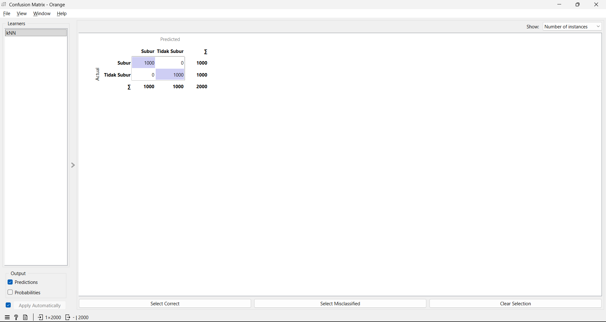
Langkah 10 - Reduksi Dimensi dengan PCA#
Widget PCA digunakan untuk mereduksi dimensi data menjadi dua komponen utama agar data dapat divisualisasikan dalam bentuk dua dimensi.
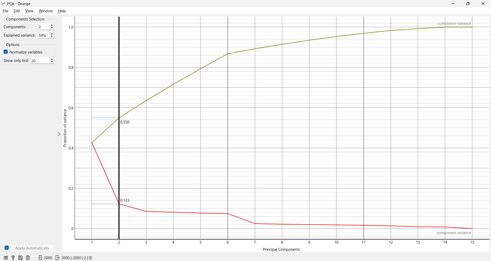
Langkah 11 - Visualisasi Data dengan Scatter Plot#
Hasil PCA divisualisasikan menggunakan Scatter Plot dengan pewarnaan berdasarkan label kelas.
Visualisasi ini digunakan untuk melihat apakah data kelas Subur dan Tidak Subur saling overlap atau terpisah.
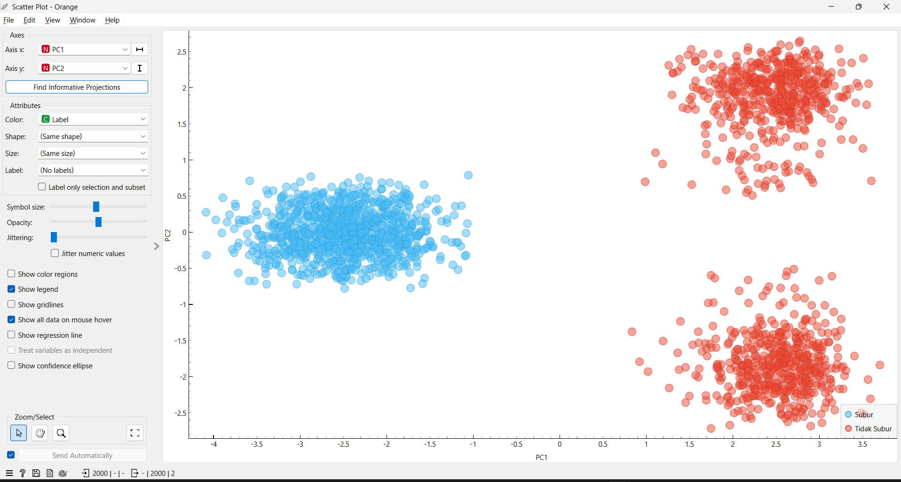
Berdasarkan visualisasi, terlihat bahwa kedua kelas terpisah dengan sangat jelas.
Hal ini menjelaskan mengapa model KNN memperoleh akurasi yang sangat tinggi.
Analisis Distribusi Data#
Widget Distributions digunakan untuk melihat distribusi setiap atribut pada dataset. Distribusi ini membantu memahami pola penyebaran data sebelum dan sesudah preprocessing.
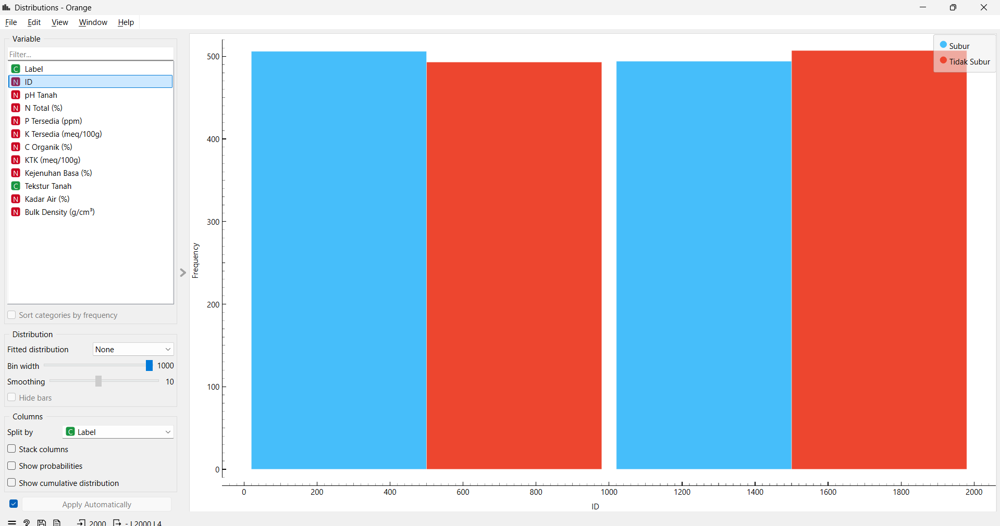
Analisis Perbandingan Fitur dengan Box Plot#
Widget Box Plot digunakan untuk membandingkan nilai fitur pada masing-masing kelas.
Dari box plot dapat dilihat apakah terdapat perbedaan distribusi fitur antara kelas Subur dan Tidak Subur.
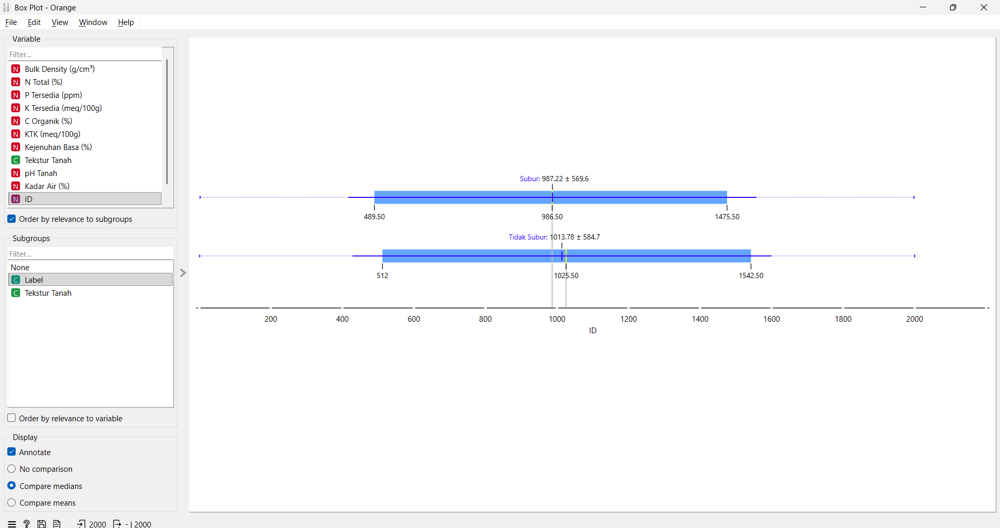
Rumus-rumus yang Digunakan#
1. Euclidean Distance#
Rumus jarak Euclidean pada KNN:
[ d(x, y) = \sqrt{\sum_{i=1}^{n}(x_i - y_i)^2} ]
Keterangan:
(x) = data pertama
(y) = data kedua
(n) = jumlah fitur
2. Accuracy#
[ Accuracy = \frac{TP + TN}{TP + TN + FP + FN} ]
3. Precision#
[ Precision = \frac{TP}{TP + FP} ]
4. Recall#
[ Recall = \frac{TP}{TP + FN} ]
5. F1-Score#
[ F1 = \frac{2 \times Precision \times Recall}{Precision + Recall} ]
Keterangan:
TP = True Positive
TN = True Negative
FP = False Positive
FN = False Negative
Analisis Hasil#
Model KNN menghasilkan nilai Accuracy, Precision, Recall, dan F1-Score sebesar 1.000.
Hal ini menunjukkan bahwa model mampu mengklasifikasikan seluruh data dengan benar.
Berdasarkan visualisasi PCA dan Scatter Plot, terlihat bahwa data kelas Subur dan Tidak Subur terpisah secara jelas tanpa overlap yang berarti.
Kondisi ini menyebabkan KNN dapat dengan mudah menentukan kelas berdasarkan tetangga terdekat.
Kesimpulan#
Berdasarkan proses analisis yang telah dilakukan, dapat disimpulkan bahwa:
Dataset berhasil diproses melalui tahapan preprocessing yang meliputi imputasi, transformasi atribut kategorikal, dan normalisasi.
Model KNN berhasil dibangun menggunakan Orange Data Mining.
Hasil evaluasi menunjukkan performa sempurna dengan:
Accuracy = 1.000
Precision = 1.000
Recall = 1.000
F1-Score = 1.000
Visualisasi menunjukkan bahwa kedua kelas terpisah secara jelas, sehingga model KNN sangat mudah melakukan klasifikasi.